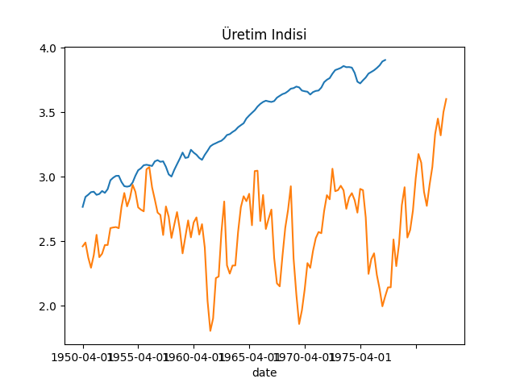

Rasgele Yürüyüş Testleri
Bir zaman serisinin rasgele yürüyüş (RY, random walk) olup olmadığını
anlamak için Genişletilmiş Dickey-Fuller (ADF) testini görmüştük. Şimdi bu
testin hangi teoriye dayandığını göreceğiz, önemli bir bölümünü kendimiz
kodlayacağız, ve urca paketi üzerinden bu testin bazı yan ürünlerini
irdelemeyi öğreneceğiz. Alttaki tabloda farklı çeşitlerde rasgele yürüyüş
modellerini görüyoruz, bunlar sırasıyla trendlı RY, kaymalı (drift) RY ve
normal RY olarak tanımlanabilir. Bu modellerin test istatistikleri vardır.
\begin{array}{|c|c|c|c|}
\hline
Sıfır Modeli & Alternatif & Kısıtlama & Test \\
\hline
$y_t = y_{t-1} + e_t$ &
$y_t = \alpha + \rho y_{t-1} + e_t$ &
$\alpha=0,\rho=1$ &
$\phi_1$ \\
\hline
$y_t = y_{t-1} + e_t$ &
$y_t = \alpha + \beta t + \rho y_{t-1} + e_t$ &
$\alpha=0,\beta=0,\rho=1$ &
$\phi_2$ \\
\hline
$y_t = \alpha + y_{t-1} + e_t$ &
$y_t = \alpha + \beta t + \rho y_{t-1} + e_t$ &
$\beta=0,\rho=1$ &
$\phi_3$ \\
\hline
$y_t = y_{t-1} + e_t$ &
$y_t = \alpha + \rho y_{t-1} + e_t$ &
$\alpha = 0,\rho=1$ &
$\tau_\mu$ \\
\hline
$y_t = \alpha + y_{t-1} + e_t$ &
$y_t = \alpha + \beta t + \rho y_{t-1} + e_t$ &
$\beta = 0,\rho=1$ &
$\tau_\tau$ \\
\hline
\end{array}
$e_t$ birbirinden bağımsız, aynı dağılımlı Gaussian'dır. Bu testlerden $\phi_1,\phi_2,\phi_3$ birleşik hipotez testleridir, bu kavramı {\em İstatistik, Birleşik Hipotez Testleri} altında görmüştük. Mesela $\phi_2$ için "kısıtlanmış" durum sıfır hipotezi altında gösteriliyor, "kısıtlanmamış" durum ise alternatif kolonu altında. Reddetmek istediğimiz hipotez iptal edilen değişkenlerin önemli olmadığı, eğer F-testi ile bu hipotezi reddedersek, yani önemli olduklarını kanıtlarsak, üstteki tablodaki sıfır hipotezi reddedilmiş olur.
Peki eğer $\phi_2$ için mesela, hem sıfır hem alternatif hipotez altında $y_{t-1}$ görülüyor, o zaman rasgele yürüyüş varlığını nasıl reddederiz? Evet iki tarafta da $y_{t-1}$ var fakat bir tarafta birim kök (unit root) olarak var, yani $1 \cdot y_{t-1}$ olarak, öteki tarafta bir katsayı üzerinden modele dahil, ayrıca diğer değişkenler de bu durumda mevcut. Eğer pür birim kök'e karşı alternatif güçlü çıkar ise o tüm diğer değişkenler zamann serisinin açıklamak için önemli sonucu çıkar, bu durum rasgele yürüyüş olmadığına dair güçlü bir işarettir (tabii tamamen yok denemez).
Hesaplar bir tür birleşik hipotezdir demiştik, yani F-test'i olarak hesaplanırlar,
$$ \phi_i = \frac{(SSE_r - SSE_u) / r}{SSE_u} / (N-k) $$
$r$ kısıtlanan değişken sayısıdır, $\phi_3$ için bu 3 olurdu mesela, SSE değerleri ise artıkların karesi kullanılarak hesaplanacaktır, $SSE_r$ kısıtlanan durum için, $SSE_u$ kısıtlama olmayan durum için, $N-k$ işe kısıtlı olmayan modelin serbestlik derecesi.
Örnek olarak Federal Reserve Board tarafından yayınlanan Üretim İndisi verisinin logaritması alınmış halini kullanacağız, veri 1950 1. çeyrek-1977 4. çeyrek arasını kapsar ve çeyreksel bazlıdır. Endüstriyel Üretim İndisi bir ekonomik göstergedir, sanayisel, madencilik, elektrik, doğal gaz gibi sektörlerin üretimini tek bir sayı altında özetlemeye uğraşır. Soru şu, acaba bu seri rasgele yürüyüş özellikleri taşıyor mu, taşımıyor ise, hangi alternatifler geçerli?
import pandas as pd
dfind = pd.read_csv('ind.csv',index_col='date')
dfind = dfind[dfind.index > '1950-01-01']
dfind = dfind[dfind.index < '1977-10-01']
np.log(dfind.indpro).plot()
plt.title(u'Üretim Indisi')
plt.savefig('tser_rwtst_02.png')

Farz ediyoruz ki bu zaman serisi şu şekilde temsil edilebiliyor,
$$ y_t = \beta_0 + \beta_1 t + \alpha_1 y_{t-1} + \alpha_2 (y_{t-1} - y_{t-2}) + e_t \qquad (1) $$
Şimdi mesela $\phi_2$ testi için bir regresyon işleteceğiz, bunun için denklem üzerinde biraz değişiklik yapalım, kısıtlamalar üzerinden $\beta_0=0,\beta_1=0,\alpha_1=1$ ve iki taraftan $y_{t-1}$ çıkartalım,
$$ y_t - y_{t-1} = \cancel{y_{t-1} - y_{t-1}} + \alpha_2 (y_{t-1} - y_{t-2}) + e_t $$
$$
\Delta y_t = \alpha_2 \Delta y_{t-1} + e_t
\qquad (2)
$$
Bu durumda kısıtlanmış regresyon (2)'yi kullanacaktır, kısıtlanmamış ise (1)'i. Ardından bu iki regresyonun sonucundan gelen hata karelerinin toplamlarını (SSE) kullanarak bir F-testi hesaplanır.
$\phi_3$ için benzer bir durum, tek fark kısıtlanmış formülde bir kesi hala var, yani her iki tarafta da $\beta_0$ mevcut.
$$
\Delta y_t = \beta_0 + \alpha_2 \Delta y_{t-1} + e_t
\qquad (3)
$$
Tabii ana formül (1)'i de $\Delta y_t$ bazında göstermek iyi olur, iki taratan $y_{t-1}$ çıkartalım,
$$ y_t-y_{t-1} = \beta_0 + \beta_1 t + (\alpha_1-1) y_{t-1} + \alpha_2 (y_{t-1} - y_{t-2}) + e_t $$
$$ \Delta y_t = \beta_0 + \beta_1 t + (\alpha_1-1) y_{t-1} + \alpha_2 \Delta y_{t-1} + e_t $$
$\alpha_1-1$ tek başına bir katsayı olarak girebilir, hangi sembolü taşıdığı pek önemli değil.
Bu arada (1,2)'deki semboller tabloda gösterilenlerden biraz değişik olabilir, fakat işin özü aynıdır. (1) formülü bir gecikme (lag) ile önceki farklara bağlantı yaratmayı seçti, bunun için bazı sembollerin değişmesi gerekti.
Regresyon ve F-test hesapları,
import statsmodels.formula.api as smf
dfind['y'] = np.log(dfind.indpro)
dfind['dy'] = dfind.y.diff()
dfind['ylag'] = dfind.y.shift(1)
dfind['dylag'] = dfind.ylag.diff()
dfind['t'] = range(len(dfind))
res1 = smf.ols('dy ~ t + ylag + dylag', data=dfind).fit()
sse1 = np.sum(res1.resid**2)
print list(res1.params)
print 'sse1',sse1
res2 = smf.ols('dy ~ dylag ', data=dfind).fit()
sse2 = np.sum(res2.resid**2)
print list(res2.params)
print 'sse2',sse2
# dikkat kesi yok burada
res3 = smf.ols('dy ~ 0 + dylag', data=dfind).fit()
print list(res3.params)
sse3 = np.sum(res3.resid**2)
print 'sse3',sse3
k = 3
phi2 = (sse3-sse1)/(k*sse1/(len(dfind)-4))
print '\nphi2', phi2
k = 2
phi3 = (sse2-sse1)/(k*sse1/(len(dfind)-4))
print 'phi3', phi3
[0.32890563193314926, 0.0012176940580472463, -0.11592339963358432, 0.47618947733620209]
sse1 0.0439920148353
[0.0054652611288141572, 0.41767827251937806]
sse2 0.0490062183592
[0.49810699391267177]
sse3 0.0517366340291
phi2 6.22029276313
phi3 6.04093237744
Kontrol için aynı hesabı urca paketi üzerinden işletelim, ki kritik
değerleri de görebilelim. Not: kritik değerler için de F dağılımı
kullanamıyoruz, çünkü artıklarda (residuals) normallik farz edemiyoruz, ki
onların karesi ve toplamı chi kare olsun, ve chi kare bölümler F
ölsün. Kalıntılarda normallik niye farz edilemiyor? Çünkü regresyonda bir
önkabul değişkenlerin de $N(0,\sigma)$ olarak dağıldığıdır, fakat sıfır
hipotezine bakarsak regresyona sokulan değişken zaman serisinin ta kendisi,
ve zaman serisi sıfır hipotezi altında normal dağılmaz ({\d değişimi}
normal dağılır), bu yüzden kalıntılar da normal olamaz. [5] bu standard
olmayan F dağılımı simülasyon ile üretiyor ve kritik değerleri bir tabloda
paylaşıyor. Simülasyonun nasıl yapıldığı [1, sf 204]'te.
%load_ext rpy2.ipython
%R library(urca)
series = np.log(dfind.indpro)
%R -i series
%R adf <- ur.df(series, type = 'trend',lags=1)
%R -o adfout adfout <- summary(adf)
print adfout
###############################################
# Augmented Dickey-Fuller Test Unit Root Test #
###############################################
Test regression trend
Call:
lm(formula = z.diff ~ z.lag.1 + 1 + tt + z.diff.lag)
Residuals:
Min 1Q Median 3Q Max
-0.068623 -0.007659 0.002293 0.011152 0.051096
Coefficients:
Estimate Std. Error t value Pr(>|t|)
(Intercept) 0.3289056 0.0942984 3.488 0.000715 ***
z.lag.1 -0.1159234 0.0337053 -3.439 0.000840 ***
tt 0.0012177 0.0003568 3.412 0.000918 ***
z.diff.lag 0.4761895 0.0826273 5.763 8.5e-08 ***
---
Residual standard error: 0.02057 on 104 degrees of freedom
Multiple R-squared: 0.2706, Adjusted R-squared: 0.2496
F-statistic: 12.86 on 3 and 104 DF, p-value: 3.262e-07
Value of test-statistic is: -3.4393 6.1029 5.927
Critical values for test statistics:
1pct 5pct 10pct
tau3 -3.99 -3.43 -3.13
phi2 6.22 4.75 4.07
phi3 8.43 6.49 5.47
Sonuçlara göre $\phi_2 = 6.1$, kritik değere göre yüzde 1 önemlilik (significance) seviyesinde $\phi_2$ hipotezini reddediyoruz, yani rasgele yürüyüş hipotezini reddediyoruz (daha doğrusu kısıtlamaların önemsiz olduğunu reddedince RY dolaylı olarak reddedilmiş oluyor). Bu demektir ki veride bir kayış (drift), birim kök, ya da deterministik bir trend var ($\beta_1 t$ ile gösterilen). Tabii birim kök hala "tamamen yok" diyemiyoruz, bu nüansı önce belirttik.
Şimdi, acaba kayış (drift), yoksa trend varlığından hangisi daha muhtemel diye görmek için $\phi_3$'e bakıyoruz. Bu test ile sıfır hipotezi üstteki tabloda 1. model, alternatifi 2. model, aradaki tek fark $\beta_1=0$ olması. Eğer bunu reddedebilirsek trendi kabul etmemiz gerekir. Test değeri 5.9, kritik değere göre yüzde 10 seviyesinden bu hipotezi reddedebiliriz, ve alternatif tez olan bu zaman serisinin trend durağan (trend stationary) olduğunu kabul ederiz. Trend durağanlık formüldeki $\beta_1 t$'nin sıfır olmadığı / etkin olduğunu söylemektedir.
Not: Trend durağanlık nedir? Bir zaman serisi durağan değil ise bu durağan olmamanın birkaç farklı sebebi olabilir, birim kök durumu bunlardan biri ki bu durumda RY ortaya çıkıyor. Fakat RY yerine deterministik trend de durağansızlığın bir sebebi olabiliyor, $\beta_1 t$ kadar bir ek sürekli her zaman diliminde seriye ekleniyor; bu da durağanlığı bozar. Yani durağanlığın bozulması hem birinci hem ikinci ya da ikisinin birden varlığı sebebiyle ortaya çıkabilir [4, sf 270]. Üstteki testler bu iki durumu birbirine alternatif hale getirip test etmeye uğraşır.
Görüldüğü gibi elle yapılan regresyon ve F-test sonuçları paketin sonuçlarına oldukça yakın. Bir de $\tau_\tau$ değerini hesaplayalım, bu testin sonucu 1. regresyondaki $y_{t-1}$'nin katsayısından gelir, daha doğrusu onun t değeridir, yani regresyon katsayısını standart hatası ile bölersek sonucu elde ederiz,
print 't degeri', res1.params['ylag'] / res1.bse['ylag']
t degeri -3.43932388217
ki üstteki kritik değerlere göre bu değeri yüzde 5 seviyesi -3.43'ten küçük olduğu için bu hipotezi de reddetmek mümkün, yani birim kök varlığı reddedilmiştir.
S\&P Fiyat / Kazanç Oranı
Bu örnekte 1871-2002 yılları arasında S\&P Birleşik Hisse İndisi fiyat seviyesi ile bu indis altında izlenen şirketlerin getirdiği kazancın oranına bakacağız. Literatürde bu gibi değerleme oranlarının (valuation ratio) ortalamaya dönüş (mean reversion) davranışı gösterip göstermediği oldukça ilgi çeken bir konudur, çünkü hisse senetlerinin fiyatlarının ne olacağını tahmin etmek gibi ilginç uygulama alanları vardır [4, sf. 274]. Mesela Campbell and Shiller adlı araştırmacılara göre 1990'ların sonlarında görülen çok yüksek fiyat/getiri oranı hisse senetlerinin düşeceğinin habercisidir, ki böylece "tarihi normale dönüş" olacaktır / olmalıdır. Önce bu oranını log'u alınmış halini grafikleyelim,
import pandas as pd
dfpe = pd.read_csv('pe.dat',sep='\s*')
dfpe['ln_price_earnings'] = np.log(dfpe.PRICE/dfpe.EARNINGS)
dfpe.ln_price_earnings.plot()
plt.savefig('tser_rwtst_01.png')

Görünüşe göre bir ortalamayı merkez alan / etrafında salınım var gibi gözüküyor, bazen ortalamaya dönüş uzun yıllar alabiliyor gibi de duruyor.. Şimdi birim kök varlığını test edelim,
series = dfpe.ln_price_earnings
%R -i series
%R adf <- ur.df(series, type = 'drift',lags=0)
%R -o adfout adfout <- summary(adf)
print adfout
###############################################
# Augmented Dickey-Fuller Test Unit Root Test #
###############################################
Test regression drift
Call:
lm(formula = z.diff ~ z.lag.1 + 1)
Residuals:
Min 1Q Median 3Q Max
-0,53078 -0,10211 0,00324 0,12171 0,41194
Coefficients:
Estimate Std. Error t value Pr(>|t|)
(Intercept) 0,33486 0,12790 2,618 0,0099 **
z.lag.1 -0,12452 0,04847 -2,569 0,0113 *
---
Residual standard error: 0,1777 on 129 degrees of freedom
Multiple R-squared: 0,04867, Adjusted R-squared: 0,04129
F-statistic: 6,6 on 1 and 129 DF, p-value: 0,01134
Value of test-statistic is: -2,569 3,4573
Critical values for test statistics:
1pct 5pct 10pct
tau2 -3,46 -2,88 -2,57
phi1 6,52 4,63 3,81
Kritik değer -2.569, yüzde 10 eşiğinden bile daha büyük bu, demek ki rasgele yürüyüş tezini reddedemiyoruz.
Fakat diğer yandan, ve özellikle serinin görünüşünde net şekilde görülebileceği üzere, serinin durağan-olmadığını da tam reddedemiyoruz. Hurst hesabı,
import sys; sys.path.append('../tser_mean')
import hurst as h
print h.hurst(dfpe.ln_price_earnings)
0.0756699198133
Bu değer 0.5'ten oldukça uzak.
Küresel Isınma Var mı?
İklimin daha sıcaklaşıp sıcaklaşmadığı politikacılar, bilim adamları arasındaki tartışma konularından biri. Eğer ısınma var ise, ve kaynağı biz insanlar isek, bu durumu durdurmak için adımlar atılmalı, çünkü yine bilim adamlarına göre sonuçları kötü olabilir. Isınmanın olup olmadığını kontrol etmek için GİSS tarafından yayınlanan veriye bakacağız, bu veri 1880-2010 arasında ay bazlı tüm dünyadaki sıcaklık anormalliklerini kaydetmiştir, anormallik ise 1951-80 periyotunun ortalaması baz alınarak tanımlanmıştır.
import pandas as pd
dfclim = pd.read_csv('climate-giss.csv',index_col=0,parse_dates=True)
dfclim.Temp.plot()
plt.savefig('tser_rwtst_03.png')

"Küresel ısınma yok" diyen arkadaşlar üstteki grafikte görüldüğü gibi özellikle 20. yüzyılda mevcudiyeti bariz olan yükselişi açıklamak durumundalar, bunun için sıcaklık "rasgele yürüyüştür" diyenler var; bu teze göre sıcaklık verisi hisse senedi gibidir, "yukarı da çıkabilir, aşağı da inebilir, tahmin edilemez bir şekilde dalgalanır". Bu teze göre şimdiye kadar olan çıkışın bir inişi de "olabilir", herşey rasgeledir belki de onlar için daha önemlisi "olanlar bizim (insanlığın) kontrolü dışındadır" . Tabii ilk akla gelen soru 100 kusur senedir yükselen nasıl bir senet ki bu analoji doğru olabilsin..? Matematiksel olarak, yazının başında gördüğümüz RY testi herhalde faydalı bir bilgi sağlar.
series = dfclim.Temp
%R -i series
%R adf <- ur.df(series, type = 'trend',selectlags="AIC")
%R -o adfout adfout <- summary(adf)
print adfout
###############################################
# Augmented Dickey-Fuller Test Unit Root Test #
###############################################
Test regression trend
Call:
lm(formula = z.diff ~ z.lag.1 + 1 + tt + z.diff.lag)
Residuals:
Min 1Q Median 3Q Max
-80.967 -9.868 0.214 10.370 85.279
Coefficients:
Estimate Std. Error t value Pr(>|t|)
(Intercept) -10.578706 1.163642 -9.091 <2e-16 ***
z.lag.1 -0.277517 0.020894 -13.282 <2e-16 ***
tt 0.014425 0.001428 10.105 <2e-16 ***
z.diff.lag -0.224780 0.024657 -9.116 <2e-16 ***
---
Residual standard error: 16.81 on 1562 degrees of freedom
Multiple R-squared: 0.2205, Adjusted R-squared: 0.219
F-statistic: 147.3 on 3 and 1562 DF, p-value: < 2.2e-16
Value of test-statistic is: -13.2819 58.8243 88.2169
Critical values for test statistics:
1pct 5pct 10pct
tau3 -3.96 -3.41 -3.12
phi2 6.09 4.68 4.03
phi3 8.27 6.25 5.34
Testlere bakınca tau3 reddedilmiş, $\phi_2,\phi_3$ reddedilmiş. Yani
RY tezi net bir şekilde reddedildi, daha önemlisi trend durağanlığı kabul
edildi. Bir trend var, ve bu trend bariz bir şekilde yukarıya doğru.
Bu noktada inkarcı arkadaşlar (!) vites değiştirip "burada ortalamaya dönüş var" diyebilirler, eh tabii ki sıcaklık verisinde ortalama dönüş var, evet Hurst hesabına bakarsak,
import sys; sys.path.append('../tser_mean')
import hurst as h
print h.hurst(dfclim.Temp)
0.040611546891
Varyans Oranı
from arch.unitroot import VarianceRatio
vr = VarianceRatio(dfclim.Temp, 12)
print(vr.summary().as_text())
Variance-Ratio Test Results
=====================================
Test Statistic -15.768
P-value 0.000
Lags 12
-------------------------------------
Computed with overlapping blocks (de-biased)
Fakat bu iki sonuç rasgele yürüyüş reddi aslında, direk ortalamaya dönüşün kabulü değil! Bunun detayları için Varyans Ortalaması teorisine yakında bakmak lazım. Yanlız şu da var ki ADF testlerindeki red gözardı edilemez, ki bu red rasgele yürüyüşü reddedip onu trende göre test etti. Üstüne üstlük kritik değerler çok yüksek seviyelerde asıldı, ki bu yüzden trendi kabul etmek zorunda kaldık. İşin meteorolojik tarafı da önemli; bilimcilere göre iklimdeki birkaç derecelik kalıcı değişimin bile büyük etkileri olacağını duyuyoruz. Yanlış sonuca varmanın bedeli ağır olur.
Kaynaklar
[1] Enders, Applied Econometric Time Series
[2] Pfaff, Analysis of Integrated and Cointegrated Time Series with R
[3] FRED, Industrial Production Index, https://research.stlouisfed.org/fred2/graph/?g=1bHY
[4] Verbeek, A Guide to Modern Econometrics
[5] Dickey D., Fuller W., {\em Likelihood Ratio Statistics for Autoregressive Time Series with Unit Root}, 1981
Yukarı